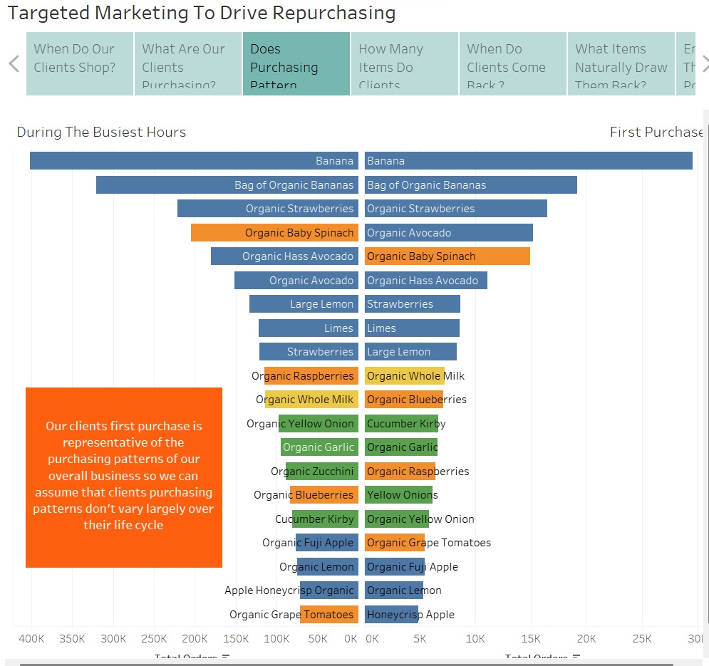

While pursuing my MBA and trying to figure out what I wanted to pivot into,
I found that the classes that I was enjoying the most were data based classes.
Looking back, it doesn't surprise me that I gravitated towards Data Science
as I applied similar techniques in my previous career.
After finishing the MBA, I decided to add on a MS in Business Analytics.
These are some of the projects that I completed while earning my dual degrees.

This was the second of four major reporting projects for the Machine Learning class. With an emphasis on using learning curves, experimentation was highly encouraged for each of these projects. Guidelines were intentionally ambiguous with little direction given to students for how to attack the problem or how to generate visualizations.
This project served as the foundation of my Machine Learning course. The data required several forms of manipulation and transformation which would be used in future projects. The primary goal of this first project was to create a gradient descent algorithm and to visualize through learning curves how hyperparameters effect the results

Part 3 of the Machine Learning course. Similar to the second assignment, the goal this time was to implement Arificial Neural Networks for simple classification. This time, I experimented with two dimensional learning curves and indicated alternative hyperparameters that could serve as time friendly substitutes to the top performer.

The final component of the Machine Learning course. This assignment combined unsupervised learning through K-Means and Expectation Maximization along with feature selection methods including Forward Selection, PCA, ICA, and Random Projections.

This gephi project explored relationships between links on a website.
This project sourced a Kaggle data file to create a fictional business case scenario in which our group simulated a consulting firm that worked with production studios to find out which streaming platform was most likely to pick up their movie.
Personally, I took responsiblity for the first 1500 lines of code, effectively performing all predictive analysis. Although I can look back and realize that there are areas for improvement with our approach, I am grateful to have taken on such a significant portion of this project as it served to pique my interest into the world of machine learning!

This is the final presentation for our Web Analytics Class in which we were given fictional Web Analytics Data and told to interpret the data through the lens of our chosen company, Zara.
I really enjoyed this project as it allowed me the opportunity to blend my MBA skillsets with a team that was mostly comprised of Business Analytics students and we were one of just three groups to recieve perfect marks on the assignment.

This project utilized ArcGis to perform a Zip Code demographic and drive time analyses to identify 3 ideal locations within the DFW metroplex for a restaurant expansion.

Using commodity data, the goals of this assignment were:
1) Recognize that outliers were a result of data entry errors.
2) Use small mutliples to visualize data

Because every data scientist needs to work with the Titanic Data Set at some point, this project created clusters in R which were then integrated into Tableau for various visualizations

Exploration of Top Natural Disasters and how they are relevant to British Patroleum refineries.

Using Instacart data to identify time specific trends in order to craft a marketing recomendation to drive repeat business. Treemaps, combined bar charts, caluclations, segmentation, product lines, this project had a little bit of everything.
Note: the Tableau and data files are so big that I am only providing the exported PowerPoint of the Story from Tableau.
This project primarily used treemaps to visualize the answers to very specific questions for the assignment
This animation project required some data manipulation in python to prepare the data for animation in Power BI. I also utilized Camtasia to record.

Development of interactive plots through the use of the Altair library in Python

HTML implementation through D3 coding
Extensive SQL Project with Data manipulation, Data Creation, and Report Generation